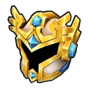

Elmo do Argon
Capacete · Tier 14 · Nível 43
Raramente usado por Argon, já que protagonistas sempre deixam a cabeça aparecendo.
Atributos
Defesa
670
Vida
42
Economia
Valor
12.900.000
Tempo de fabricação
2d 17h
XP do comerciante
345.000
Trabalhadores: Ferreiro 37, Mestre 33, Joalheiro 30
Receita


Marcos do projeto
4
Tempo de fabricação -25%
10
-94 Ferro
18
Valor +25%
25
-1 Brasão dos Céus
40
Chance de qualidade +1